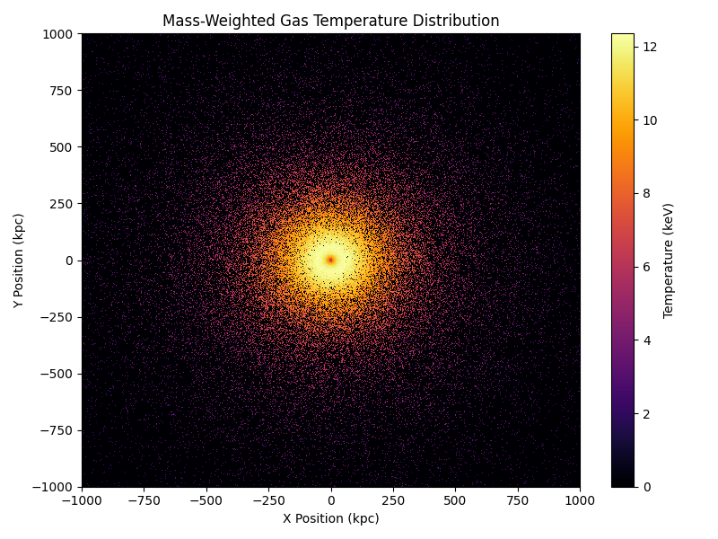

Note
Go to the end to download the full example code.
Particle Datasets: Galaxy Clusters#
This example demonstrates how to generate particle datasets for a
galaxy cluster model using Pisces. To do so, we’ll use the built-in
hook for generating particles, which gives us access to the
generate_particles()
method.
Setup & Imports#
The first thing that needs to happen is importing the
relevant building blocks. For this, we’ll need the
SphericalGalaxyClusterModel class
which will be our model and the HernquistDensityProfile, which
we’ll use to represent the total and gas density profiles of the cluster.
import tempfile
import matplotlib.pyplot as plt
import numpy as np
import unyt
from pisces.models.galaxy_clusters import SphericalGalaxyClusterModel
from pisces.profiles.density import HernquistDensityProfile
Building the Model#
First things first, we need to build the model. In this case, we’ll be using basic Hernquist profiles [1] for both the gas and total density. This is nice for simple models because we can fix the total mass easily. We’ll create a galaxy cluster with 85% of the total mass in dark matter and 15% in gas. The total mass of the cluster will be \(10^{15} \;{\rm M_\odot}\).
# Define some parameters for the total density profile.
total_mass = unyt.unyt_quantity(1e15, "Msun")
gas_mass, dm_mass = total_mass * 0.15, total_mass * 0.85
gas_scale_radius = unyt.unyt_quantity(220, "kpc")
dm_scale_radius = unyt.unyt_quantity(200, "kpc")
gas_rho_0 = gas_mass / (2 * np.pi * gas_scale_radius**3)
dm_rho_0 = dm_mass / (2 * np.pi * dm_scale_radius**3)
# Create the density profiles.
gas_density_profile = HernquistDensityProfile(
rho_0=gas_rho_0,
r_s=gas_scale_radius,
)
total_density_profile = HernquistDensityProfile(
rho_0=dm_rho_0,
r_s=dm_scale_radius,
)
# Radial range and resolution
rmin = unyt.unyt_quantity(1.0, "kpc")
rmax = unyt.unyt_quantity(3.0, "Mpc")
# Create a temporary directory to store the model file and
# give the model a filename.
tmpdir = tempfile.TemporaryDirectory()
filename = f"{tmpdir.name}/cluster_temp_dens_model.h5"
# Now we can move forward with making the model!
model = SphericalGalaxyClusterModel.from_density_and_total_density(
gas_density_profile,
total_density_profile,
filename,
min_radius=rmin,
max_radius=rmax,
num_points=1000,
overwrite=True,
)
Preparing metadata...: 0%| | 0/7 [00:00<?, ?it/s]
Generating grid...: 14%|█▍ | 1/7 [00:00<00:00, 91180.52it/s]
Building density...: 29%|██▊ | 2/7 [00:00<00:00, 3890.82it/s]
Computing masses...: 43%|████▎ | 3/7 [00:00<00:00, 2886.65it/s]
Calculating potential...: 57%|█████▋ | 4/7 [00:00<00:00, 114.23it/s]
Calculating potential...: 71%|███████▏ | 5/7 [00:00<00:00, 8.06it/s]
Calculating temperature...: 71%|███████▏ | 5/7 [00:00<00:00, 8.06it/s]
Calculating temperature...: 86%|████████▌ | 6/7 [00:18<00:03, 3.99s/it]
Performing additional computations...: 86%|████████▌ | 6/7 [00:18<00:03, 3.99s/it]
COMPLETE: 86%|████████▌ | 6/7 [00:18<00:03, 3.99s/it]
Generating Particles#
With the model built, we can now generate the particles for the cluster. To
do this we’ll use the generate_particles()
method, which allows us to specify the number of particles for each component.
Internally, this will serve to sample the particles from our density profiles, position them in 3D space, interpolate fields onto them, and then write them to the output file. For this example, we’ll generate \(10^5\) particles for the gas component and \(10^5\) particles for the dark matter component.
particles = model.generate_particles(
filename=f"{tmpdir.name}/cluster_particles.h5",
num_particles={"gas": 100_000, "dark_matter": 100_000},
overwrite=True,
)
Generating particles: 0%| | 0/2 [00:00<?, ?species/s]
Generating 100000 gas particles...
Generating particles: 0%| | 0/2 [00:00<?, ?species/s]
Interpolating gas fields: 0%| | 0/7 [00:00<?, ?fields/s]
Generating particles: 50%|█████ | 1/2 [00:00<00:00, 9.66species/s]
Generating 100000 dark_matter particles...
Generating particles: 50%|█████ | 1/2 [00:00<00:00, 9.66species/s]
Interpolating dark_matter fields: 0%| | 0/3 [00:00<?, ?fields/s]
DF for 'dark_matter' not found, attempting to compute it...
Generating particles: 50%|█████ | 1/2 [00:00<00:00, 9.66species/s]
Generating particle velocities...: 0%| | 0/100000 [00:00<?, ?it/s]
Generating particle velocities...: 5%|▌ | 5384/100000 [00:00<00:01, 53838.38it/s]
Generating particle velocities...: 11%|█ | 10799/100000 [00:00<00:01, 54016.87it/s]
Generating particle velocities...: 16%|█▌ | 16203/100000 [00:00<00:01, 54026.81it/s]
Generating particle velocities...: 22%|██▏ | 21606/100000 [00:00<00:01, 53982.87it/s]
Generating particle velocities...: 27%|██▋ | 27005/100000 [00:00<00:01, 53893.76it/s]
Generating particle velocities...: 32%|███▏ | 32395/100000 [00:00<00:01, 53846.73it/s]
Generating particle velocities...: 38%|███▊ | 37780/100000 [00:00<00:01, 53815.24it/s]
Generating particle velocities...: 43%|████▎ | 43174/100000 [00:00<00:01, 53854.18it/s]
Generating particle velocities...: 49%|████▊ | 48581/100000 [00:00<00:00, 53919.78it/s]
Generating particle velocities...: 54%|█████▍ | 53973/100000 [00:01<00:00, 53784.85it/s]
Generating particle velocities...: 59%|█████▉ | 59369/100000 [00:01<00:00, 53836.08it/s]
Generating particle velocities...: 65%|██████▍ | 64778/100000 [00:01<00:00, 53910.41it/s]
Generating particle velocities...: 70%|███████ | 70170/100000 [00:01<00:00, 53820.53it/s]
Generating particle velocities...: 76%|███████▌ | 75554/100000 [00:01<00:00, 53826.10it/s]
Generating particle velocities...: 81%|████████ | 80937/100000 [00:01<00:00, 53736.32it/s]
Generating particle velocities...: 86%|████████▋ | 86311/100000 [00:01<00:00, 53655.95it/s]
Generating particle velocities...: 92%|█████████▏| 91677/100000 [00:01<00:00, 53573.66it/s]
Generating particle velocities...: 97%|█████████▋| 97035/100000 [00:01<00:00, 53562.53it/s]
Generating particles: 100%|██████████| 2/2 [00:02<00:00, 1.52s/species]
Generating particles: 100%|██████████| 2/2 [00:02<00:00, 1.31s/species]
Depending on your machine, this may take a few seconds to run as the velocity sampling is a somewhat expensive operation. Once the particles are generated, we can do any number of things with them, such as visualizing the density field, plotting the temperature profile, or even running a simulation with them.
For this example, we’ll simply visualize the density-weighted gas temperature profile, which is similar to what one might see in an X-ray observation of a galaxy cluster. To do this, we’ll need to extract the gas temperatures, particle positions, and weights from the dataset. We can then use histograms to visualize the temperature distribution.
# Extract the gas temperature, positions, and weights.
temperature = particles["gas.kT"].to_value("keV")
positions = particles["gas.particle_position"].to_value("kpc")
density = particles["gas.density"].to_value("Msun/kpc**3")
# Create the bins.
bins = np.linspace(-1000, 1000, 601)
# Create the histogram weighted by density * temperature.
# Then create the density only histogram. We can then divide
# these to get the mass-weighted temperature.
hist_temp_dens, _, _ = np.histogram2d(positions[:, 0], positions[:, 1], bins=bins, weights=temperature * density)
hist_dens, _, _ = np.histogram2d(positions[:, 0], positions[:, 1], bins=bins, weights=density)
# Calculate the mass-weighted temperature.
mass_weighted_temp = np.zeros_like(hist_temp_dens)
mass_weighted_temp[hist_dens > 0] = hist_temp_dens[hist_dens > 0] / hist_dens[hist_dens > 0]
# Create the plot.
fig, ax = plt.subplots(figsize=(8, 6))
c = ax.pcolormesh(bins, bins, mass_weighted_temp.T, shading="auto", cmap="inferno")
ax.set_xlabel("X Position (kpc)")
ax.set_ylabel("Y Position (kpc)")
ax.set_title("Mass-Weighted Gas Temperature Distribution")
fig.colorbar(c, ax=ax, label="Temperature (keV)")
plt.tight_layout()
plt.show()

Total running time of the script: (0 minutes 21.211 seconds)